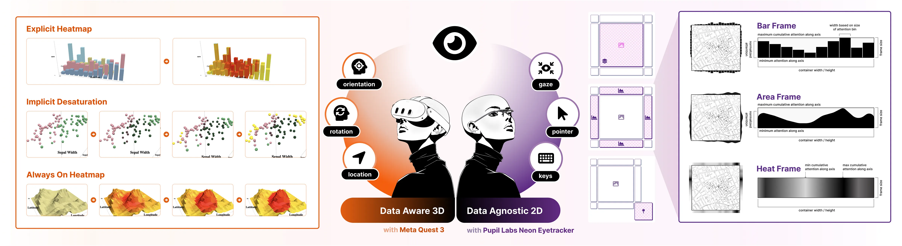
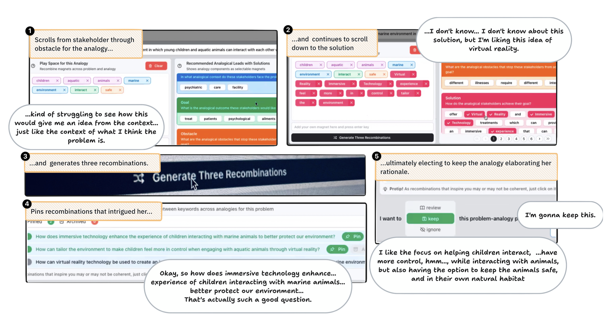
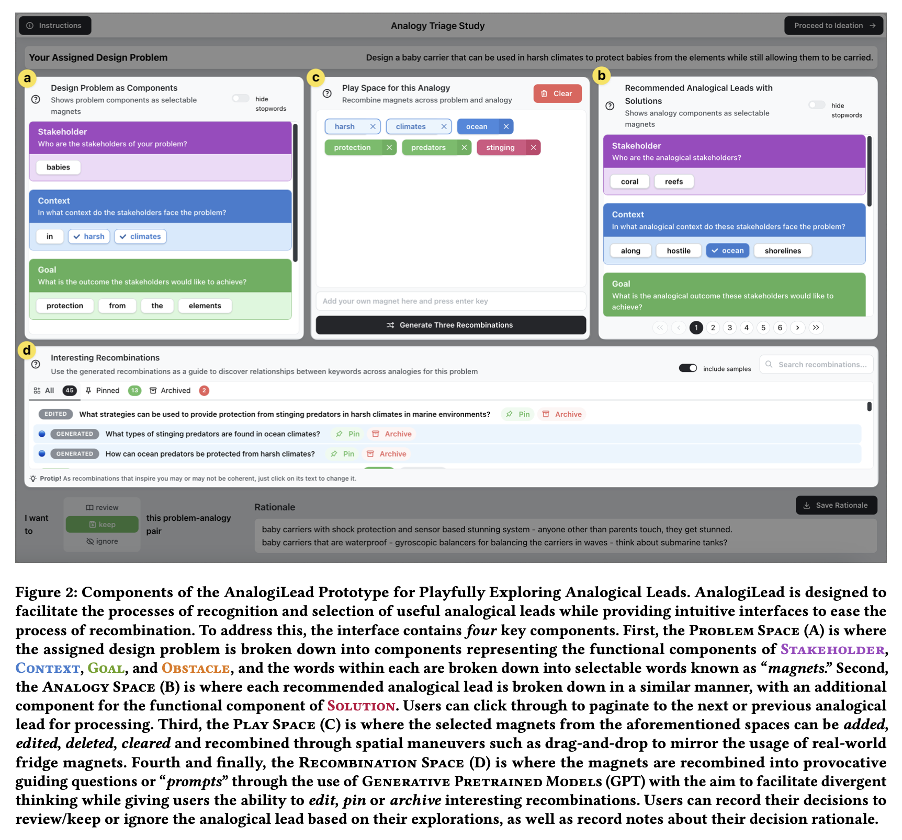
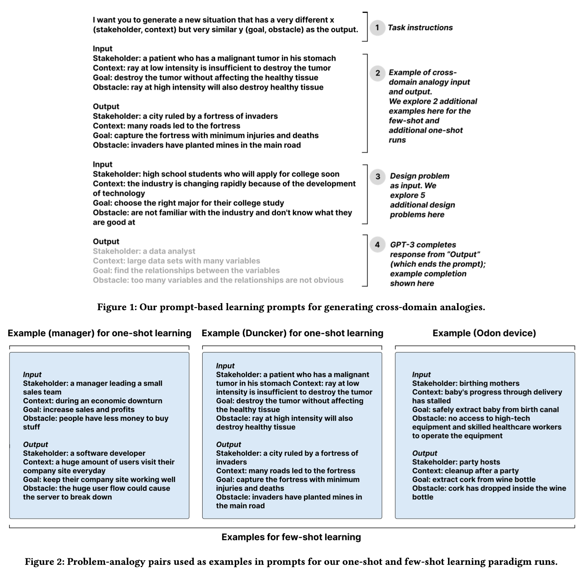

I'm a Ph.D. candidate at the Center for Anytime Anywhere Analytics (CA³) in the Department of Computer Science at Aarhus University, advised by Niklas Elmqvist. Previously, I earned my Masters' in Human-Computer Interaction from the College of Information Studies at the University of Maryland, College Park.
My research interests include Ubiquitous Analytics, Collaborative Immersive Analytics, Context-Aware Systems, and Human-Centered Artificial Intelligence. I seek to craft systems for an immersive future that enable seamless visualization, analysis, and collaborative mindshare with ubiquitous data, accessible to anyone, anytime, anywhere.
Publications † indicates equal contribution

2024 Full Paper
Attention-Aware Visualization: Tracking and Responding to User Perception Over Time
Arvind Srinivasan†, Johannes Ellemose†, Peter W. S. Butcher, Panagiotis D. Ritsos and Niklas Elmqvist
IEEE Transactions on Visualization & Computer Graphics
We propose the notion of attention-aware visualizations (AAVs) that track the user's perception of a visual representation over time and feed this information back to the visualization. Such context awareness is particularly useful for ubiquitous and immersive analytics where knowing which embedded visualizations the user is looking at can be used to make visualizations react appropriately to the user's attention: for example, by highlighting data the user has not yet seen. We can separate the approach into three components: (1) measuring the user's gaze on a visualization and its parts; (2) tracking the user's attention over time; and (3) reactively modifying the visual representation based on the current attention metric. In this paper, we present two separate implementations of AAV: a 2D data-agnostic method for web-based visualizations that can use an embodied eyetracker to capture the user's gaze, and a 3D data-aware one that uses the stencil buffer to track the visibility of each individual mark in a visualization. Both methods provide similar mechanisms for accumulating attention over time and changing the appearance of marks in response. We also present results from a qualitative evaluation studying visual feedback and triggering mechanisms for capturing and revisualizing attention.

2024 Open Access Full Paper
Improving Selection of Analogical Inspirations through Chunking and Recombination
Arvind Srinivasan and Joel Chan
Proceedings of the 16th Conference on Creativity & Cognition
recievedBest Paper Honorable Mention
Analogies can be a powerful source of new ideas; however, creators often fail to recognize and harness potentially beneficial analogical leads, especially from other problem domains. In this paper, we introduce AnalogiLead, an interactive interface designed to reduce premature dismissal of analogies by facilitating playful exploration of analogical leads. Drawing on cognitive mechanisms of conceptual chunking and recombination, AnalogiLead scaffolds users to engage with meaningful chunks of problems and analogies and recombine them into inspiring brainstorming questions. In a within-subjects experiment, participants (N=23) who used AnalogiLead dismissed analogies 4x less often, with 12x fewer decision changes, compared to a baseline interface with no chunking or recombination. This reduction in premature dismissal was associated with 64% longer processing time. Through qualitative analysis of video and think-aloud data, we describe how the chunking and recombination mechanisms facilitated playful engagement with analogies. These findings highlight opportunities and challenges for improving analogical innovation through careful theory-driven design of interfaces for selecting analogical leads.

2023 Technical Demonstration
AnalogiLead: Improving Selection of Analogical Inspirations with Chunking and Recombination
Arvind Srinivasan and Joel Chan
Proceedings of the 15th Conference on Creativity and Cognition
Analogical reasoning, a process that integrates potential leads across domains and disciplines, has been proven to contribute to breakthrough innovations. Selecting the right analogical leads is crucial, as it determines the quality and effectiveness of the generated ideas. However, identifying relevant analogical leads can be challenging and may be missed due to premature rejection or design fixation. To address this problem, our system, "AnalogiLead", draws on the cognitive mechanisms of chunking and recombination as a medium of interaction for selecting beneficial analogies. Users interact with meaningful chunks or segments from a design problem and analogy, represented as interactive tiles called "magnets", and evaluate the analogies by recombining the "magnets" into brainstorming questions. These mechanisms are designed to foster playful and divergent exploration of analogical leads (vs. restrictive, relevance-based screening), to reduce premature rejection of analogical leads and foster more analogical innovations.

2023 Open Access Full Paper
Fluid Transformers and Creative Analogies: Exploring Large Language Models' Capacity for Augmenting Cross-Domain Analogical Creativity
Zijian Ding, Arvind Srinivasan, Stephen Macneil and Joel Chan
Proceedings of the 15th Conference on Creativity and Cognition
recievedBest Paper Honorable Mention
Cross-domain analogical reasoning is a core creative ability that can be challenging for humans. Recent work has shown some proofs-of-concept of Large language Models' (LLMs) ability to generate cross-domain analogies. However, the reliability and potential usefulness of this capacity for augmenting human creative work has received little systematic exploration. In this paper, we systematically explore LLMs capacity to augment cross-domain analogical reasoning. Across three studies, we found: 1) LLM-generated cross-domain analogies were frequently judged as helpful in the context of a problem reformulation task (median 4 out of 5 helpfulness rating), and frequently (~80% of cases) led to observable changes in problem formulations, and 2) there was an upper bound of ~25% of outputs being rated as potentially harmful, with a majority due to potentially upsetting content, rather than biased or toxic content. These results demonstrate the potential utility — and risks — of LLMs for augmenting cross-domain analogical creativity.
Education
January 2024 → December 2026
Ph.D. Student and Research Fellow
Aarhus University
Aarhus, Denmark
August 2021 → May 2023
Master of Science in Human-Computer Interaction
University of Maryland
College Park, MD, USA
GPA: 3.93/4.00
August 2016 → May 2020
Bachelor of Technology
SRM Institute of Science and Technology
Kattankulathur, India
GPA: 3.82/4.00